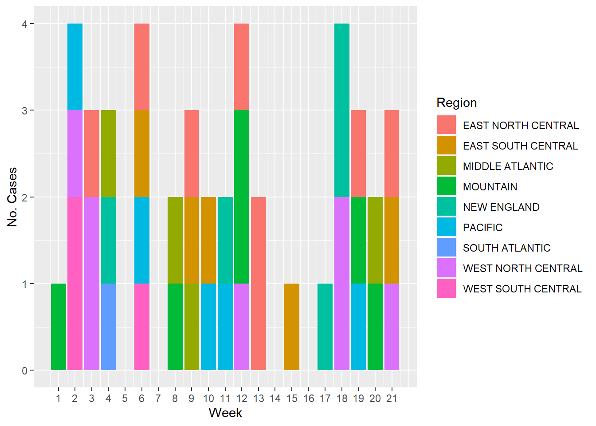
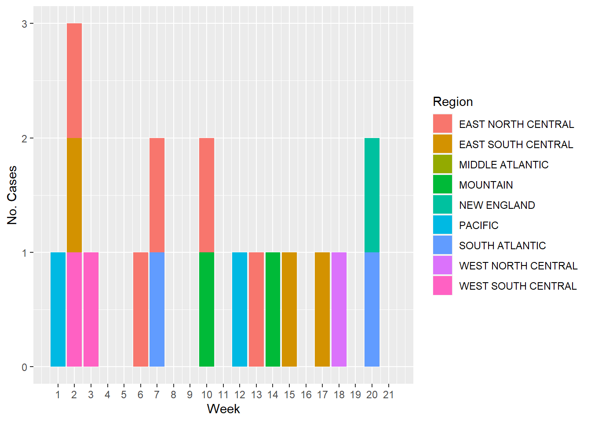

── Conflicts ────────────────────────────────────────── tidyverse_conflicts() ──
✖ dplyr::filter() masks stats::filter()
✖ dplyr::lag() masks stats::lag()
ℹ Use the conflicted package (<http://conflicted.r-lib.org/>) to force all conflicts to become errors
The following dataset is about the provisional cases of Salmonellosis for the year 2019 in the United States regions, the US territories and non-US residents. Salmonellosis is part of the national notifiable diseases reported from the National Notifiable Diseases Surveillance System (NNDSS). The cases are reported by the state health departments to the Centers for Disease Control and Prevention (CDC) on a weekly basis. This dataset was obtained from the CDC data website https://data.cdc.gov/, and the original dataset was downloaded from this link.
Cleaning the dataset
The following code chunk details about loading the dataset into the salmonella object.
#Load the dataset into the `salmonella` objectsalmonella <-read_csv(here("cdcdata-exercise", "data", "Salmonella_CDC_2019.csv"))
Rows: 1470 Columns: 29
── Column specification ────────────────────────────────────────────────────────
Delimiter: ","
chr (15): Reporting Area, Salmonella Paratyphi infection§, Current week, fla...
dbl (8): MMWR Year, MMWR Week, Salmonella Paratyphi infection§, Current wee...
lgl (6): Salmonella Paratyphi infection§, Previous 52 weeks Max†, Salmonell...
ℹ Use `spec()` to retrieve the full column specification for this data.
ℹ Specify the column types or set `show_col_types = FALSE` to quiet this message.
#Explore the dimensions of the datasetnrow(salmonella)
[1] 1470
ncol(salmonella)
[1] 29
This dataset has 1470 observations and 29 variables, among those variables I am only interested in some, since some are repetitive or have a lot of non-reported (blank or missing values). So in this part of the code I am deleting most of the variables, so I only have the location area, the week, and the weekly reported cases of Salmonella typhi, Salmonella paratyphi and Salmonellosis (which represents cases of Salmonella other than S. paratyphi and S. typhi).
#Using the `select()` function to choose only 5 variablessalmonella <- salmonella %>%select(c(`Reporting Area`, `MMWR Week`, `Salmonella Paratyphi infection§, Current week`, `Salmonella Typhi infection¶, Current week`, `Salmonellosis (excluding Salmonella Paratyphi infection and Salmonella Typhoid infection)**, Current week`))
Here I am changing the name of the variables, so they are easier to read, then I am changing the NA values to 0, so they are not inputed as NAs.
#First renaming all the columns using the `rename()` functionsalmonella <- salmonella %>%rename(Region =`Reporting Area`,Week =`MMWR Week`,`S. paratyphi`=`Salmonella Paratyphi infection§, Current week`,`S. typhi`=`Salmonella Typhi infection¶, Current week`,`Other Salmonella`=`Salmonellosis (excluding Salmonella Paratyphi infection and Salmonella Typhoid infection)**, Current week`)#Then changing all `NAs` to `0`na_index <-is.na(salmonella)salmonella[na_index] <-0
Finally, I decided to keep only the records that belong to any of the 9 Census Bureau designated regions. This means removing all data from the individual 50 US states and 6 US territories. But first I wanted to explore if there are any typos in some of the locations.
#First exploring how many unique values are from the `location` variable using `unique()`unique(salmonella$Region) %>%sort(decreasing = F)
As seen above there are two middle atlantic variables: MIDDLE ATLANTIC and MIDDDLE ATLANTIC so I corrected the later one.
#Rename all `MIDDDLE ATLANTIC` observations to `MIDDLE ATLANTIC` using `mutate()` and `recode()`salmonella <- salmonella %>%mutate(Region =recode(Region, `MIDDDLE ATLANTIC`="MIDDLE ATLANTIC"))#Check again if the operation worked out using the `unique()` functionunique(salmonella$Region) %>%sort(decreasing = F)
The operation worked, so now I will filter only the 9 US regions. Then, checking again if the operation worked.
#Using `filter()` to keep only the 9 Census Bureau designated regionssalmonella <-filter(salmonella, Region %in%c("NEW ENGLAND", "MIDDLE ATLANTIC", "EAST NORTH CENTRAL", "WEST NORTH CENTRAL","SOUTH ATLANTIC", "EAST SOUTH CENTRAL", "WEST SOUTH CENTRAL", "MOUNTAIN", "PACIFIC"))#Check again if the operation worked out using the `unique()` functionunique(salmonella$Region) %>%sort(decreasing = F)
[1] "EAST NORTH CENTRAL" "EAST SOUTH CENTRAL" "MIDDLE ATLANTIC"
[4] "MOUNTAIN" "NEW ENGLAND" "PACIFIC"
[7] "SOUTH ATLANTIC" "WEST NORTH CENTRAL" "WEST SOUTH CENTRAL"
Exploratory and Descriptive Analysis
First, I created a dataframe salmonella_summary that summarizes the number of infections of each type of Salmonella by each region.
#First I grouped the observations using `group_by()`, and then used `summarize()` with `sum()` to create the summary of infections for each type of Salmonella by each regionsalmonella_summary <- salmonella %>%group_by(Region) %>%summarize(`S. paratyphi`=sum(`S. paratyphi`),`S. typhi`=sum(`S. typhi`),`Other Salmonella`=sum(`Other Salmonella`))#View the dataframesalmonella_summary
# A tibble: 9 × 4
Region `S. paratyphi` `S. typhi` `Other Salmonella`
<chr> <dbl> <dbl> <dbl>
1 EAST NORTH CENTRAL 0 1 504
2 EAST SOUTH CENTRAL 0 0 117
3 MIDDLE ATLANTIC 1 8 322
4 MOUNTAIN 1 2 283
5 NEW ENGLAND 1 0 50
6 PACIFIC 0 0 51
7 SOUTH ATLANTIC 4 15 331
8 WEST NORTH CENTRAL 0 1 224
9 WEST SOUTH CENTRAL 5 1 242
To create a table that shows the frequency of cases by region and their percentages, I decided to transpose the data frame, creating the salmonella_summary_transp object.
#Transpose data using the `data.frame()` function to create the data frame, then using `t()` to transpose column by rowssalmonella_summary_transp <-data.frame(cbind(names(salmonella_summary), t(salmonella_summary)))#Since this function didn't properly named the columns, I manually set them using the `colnames()` functioncolnames(salmonella_summary_transp) <-c("Bacteria","East North Central", "East South Central","Middle Atlantic","Mountain","New England","Pacific","South Atlantic","West North Central","West South Central")#Here I also specified that the rows shouldn't be named, using the `rownames()` and then set to NULLrownames(salmonella_summary_transp) <-NULL#I also deleted the first row of the new data frame, since it contained the name of the columns, I did this using base R.salmonella_summary_transp <- salmonella_summary_transp[-1,]#View the data framesalmonella_summary_transp
Bacteria East North Central East South Central Middle Atlantic
2 S. paratyphi 0 0 1
3 S. typhi 1 0 8
4 Other Salmonella 504 117 322
Mountain New England Pacific South Atlantic West North Central
2 1 1 0 4 0
3 2 0 0 15 1
4 283 50 51 331 224
West South Central
2 5
3 1
4 242
As seen above, there is the problem that all the columns are character type variable, so I changed them to numeric in the following code chunk.
#Use the `mutate_at()` function and then the as.numeric statement to change all the variables, except the first one to numeric typesalmonella_summary_transp <- salmonella_summary_transp %>%mutate_at(c("East North Central", "East South Central","Middle Atlantic","Mountain","New England","Pacific","South Atlantic","West North Central","West South Central"), as.numeric)#Using `str()` to check if the dataframe was changedstr(salmonella_summary_transp)
'data.frame': 3 obs. of 10 variables:
$ Bacteria : chr "S. paratyphi" "S. typhi" "Other Salmonella"
$ East North Central: num 0 1 504
$ East South Central: num 0 0 117
$ Middle Atlantic : num 1 8 322
$ Mountain : num 1 2 283
$ New England : num 1 0 50
$ Pacific : num 0 0 51
$ South Atlantic : num 4 15 331
$ West North Central: num 0 1 224
$ West South Central: num 5 1 242
Finally, I created a table that summarizes the frequency and percentage of cases by each type of bacteria and by region under the salmonella_freq object.
salmonella_freq <-data.frame(salmonella_summary_transp %>%group_by(Bacteria) %>%#Grouping by type of bacteriasummarize(`East North Central`=paste0(sum(`East North Central`), "(", #To sum all cases of salmonella from this regionround(sum(`East North Central`)/sum(salmonella_summary_transp$`East North Central`) *100,2), #To also estimate the percentage of cases for this region (The following lines of code repeat the two steps shown here)"%)"),`East South Central`=paste0(sum(`East South Central`), "(",round(sum(`East South Central`)/sum(salmonella_summary_transp$`East South Central`) *100,2),"%)"),`Middle Atlantic`=paste0(sum(`Middle Atlantic`), "(",round(sum(`Middle Atlantic`)/sum(salmonella_summary_transp$`Middle Atlantic`) *100,2),"%)"),`Mountain`=paste0(sum(`Mountain`), "(",round(sum(`Mountain`)/sum(salmonella_summary_transp$`Mountain`) *100,2),"%)"),`New England`=paste0(sum(`New England`), "(",round(sum(`New England`)/sum(salmonella_summary_transp$`New England`) *100,2),"%)"),`Pacific`=paste0(sum(`Pacific`), "(",round(sum(`Pacific`)/sum(salmonella_summary_transp$`Pacific`) *100,2),"%)"),`South Atlantic`=paste0(sum(`South Atlantic`), "(",round(sum(`South Atlantic`)/sum(salmonella_summary_transp$`South Atlantic`) *100,2),"%)"),`West North Central`=paste0(sum(`West North Central`), "(",round(sum(`West North Central`)/sum(salmonella_summary_transp$`West North Central`) *100,2),"%)"),`West South Central`=paste0(sum(`West South Central`), "(",round(sum(`West South Central`)/sum(salmonella_summary_transp$`West South Central`) *100,2),"%)")))#View the tablesalmonella_freq
In this table it is observed that the majority of cases of Salmonellosis in all the regions belong to the types of Salmonella other than S. typhi or S. paratyphi.
And now, to have a visual representation of how the cases of each type of Salmonella look by week, I plotted the following figures. The first figure represents the number of Salmonella paratyphi cases by week and color coded by US region
#Using `ggplot()` and the `geom_col()` functions to plot the cases of S. paratyphi through timeggplot(salmonella, aes(x= Week, y=`S. paratyphi`, fill= Region))+geom_col()+labs(x="Week", y="No. Cases")+scale_x_continuous(breaks =seq(1, 21, by=1))
This figure represents the number of Salmonella typhi cases by week and color coded by US region
#Using `ggplot()` and the `geom_col()` functions to plot the cases of S. typhi through timeggplot(salmonella, aes(x= Week, y=`S. typhi`, fill= Region))+geom_col()+labs(x="Week", y="No. Cases")+scale_x_continuous(breaks =seq(1, 21, by=1))
And finally, the next figure shows the number of cases of Other types of Salmonella (the majority of them) by week and color coded by US region.
#Using `ggplot()` and the `geom_col()` functions to plot the cases of all other types of Salmonellosis through timeggplot(salmonella, aes(x= Week, y=`Other Salmonella`, fill= Region))+geom_col()+labs(x="Week", y="No. Cases")+scale_x_continuous(breaks =seq(1, 21, by=1))+scale_y_continuous(breaks =seq(0, 200, by=20))
This section contributed by MUTSA NYAMURANGA
Creating Synthetic Replicate Data
# make sure the packages are installed# Load required packageslibrary(here)library(dplyr)library(ggplot2)library(skimr)library(gtsummary)
#BlackLivesMatter
Here I set a seed so that my synthetic data will be reproducible to assess discrepencies with the original data.
set.seed(189)n_observations <-189
Analyzing Orginal Data Set
Although I have view Erick’s code and his analysis, I would like to also gain an understanding of what he looked at and how he got there. Taking a look at the data myself will help create the correct data frame for replication.
#Skim the data structure to analyze observations and variable typesskimr::skim(salmonella)
Data summary
Name
salmonella
Number of rows
189
Number of columns
5
_______________________
Column type frequency:
character
1
numeric
4
________________________
Group variables
None
Variable type: character
skim_variable
n_missing
complete_rate
min
max
empty
n_unique
whitespace
Region
0
1
7
18
0
9
0
Variable type: numeric
skim_variable
n_missing
complete_rate
mean
sd
p0
p25
p50
p75
p100
hist
Week
0
1
11.00
6.07
1
6
11
16
21
▇▆▆▆▆
S. paratyphi
0
1
0.06
0.41
0
0
0
0
5
▇▁▁▁▁
S. typhi
0
1
0.15
0.41
0
0
0
0
2
▇▁▁▁▁
Other Salmonella
0
1
11.24
11.17
0
1
8
18
52
▇▃▂▁▁
#Collect distribution of variable observationsgtsummary::tbl_summary(salmonella, statistic =list(all_continuous() ~"{mean}/{median}/{min}/{max}/{sd}",all_categorical() ~"{n} / {N} ({p}%)"),)
Characteristic
N = 1891
Region
EAST NORTH CENTRAL
21 / 189 (11%)
EAST SOUTH CENTRAL
21 / 189 (11%)
MIDDLE ATLANTIC
21 / 189 (11%)
MOUNTAIN
21 / 189 (11%)
NEW ENGLAND
21 / 189 (11%)
PACIFIC
21 / 189 (11%)
SOUTH ATLANTIC
21 / 189 (11%)
WEST NORTH CENTRAL
21 / 189 (11%)
WEST SOUTH CENTRAL
21 / 189 (11%)
Week
11.0/11.0/1.0/21.0/6.1
S. paratyphi
0
181 / 189 (96%)
1
7 / 189 (3.7%)
5
1 / 189 (0.5%)
S. typhi
0
165 / 189 (87%)
1
20 / 189 (11%)
2
4 / 189 (2.1%)
Other Salmonella
11/8/0/52/11
1 n / N (%); Mean/Median/Minimum/Maximum/SD
#Distributions Within each variabletable(salmonella$Region)
EAST NORTH CENTRAL EAST SOUTH CENTRAL MIDDLE ATLANTIC MOUNTAIN
21 21 21 21
NEW ENGLAND PACIFIC SOUTH ATLANTIC WEST NORTH CENTRAL
21 21 21 21
WEST SOUTH CENTRAL
21
# Summary table similar to originalsyn_salmonella_summary <- syn_salmonella %>%group_by(Region) %>%summarize(`S..paratyphi`=sum(`S..paratyphi`, na.rm =TRUE), # Add na.rm = TRUE if there are NA values`S..typhi`=sum(`S..typhi`, na.rm =TRUE),`Other.Salmonella`=sum(`Other.Salmonella`, na.rm =TRUE))# Transpose summary data framesyn_salmonella_summary_transp <-data.frame(t(syn_salmonella_summary[-1]))colnames(syn_salmonella_summary_transp) <- syn_salmonella_summary$Region# Change data types to numeric (excluding the first column)syn_salmonella_summary_transp[, -1] <-sapply(syn_salmonella_summary_transp[, -1], as.numeric)
# Table of frequencies and percentagessyn_salmonella_freq <- syn_salmonella_summary_transp %>%mutate(Total =rowSums(.)) %>%mutate(across(everything(), ~paste0(., " (", round(. / Total *100, 2), "%)"), .names ="{col}_Percent")) %>%select(-Total) %>%rbind(c("Total", colSums(syn_salmonella_summary_transp[, -1])))
Warning in rbind(deparse.level, ...): number of columns of result, 19, is not a
multiple of vector length 9 of arg 2
syn_salmonella_summary_transp
EAST NORTH CENTRAL EAST SOUTH CENTRAL MIDDLE ATLANTIC MOUNTAIN
S..paratyphi 8 5 4 6
S..typhi 5 3 0 2
Other.Salmonella 6 5 5 4
NEW ENGLAND PACIFIC SOUTH ATLANTIC WEST NORTH CENTRAL
S..paratyphi 5 5 1 7
S..typhi 1 2 2 1
Other.Salmonella 5 9 4 5
WEST SOUTH CENTRAL
S..paratyphi 3
S..typhi 2
Other.Salmonella 7
syn_salmonella_summary
# A tibble: 9 × 4
Region S..paratyphi S..typhi Other.Salmonella
<chr> <dbl> <dbl> <dbl>
1 EAST NORTH CENTRAL 8 5 6
2 EAST SOUTH CENTRAL 5 3 5
3 MIDDLE ATLANTIC 4 0 5
4 MOUNTAIN 6 2 4
5 NEW ENGLAND 5 1 5
6 PACIFIC 5 2 9
7 SOUTH ATLANTIC 1 2 4
8 WEST NORTH CENTRAL 7 1 5
9 WEST SOUTH CENTRAL 3 2 7
Plotting similar to original
Finally, I create plots similar to the plots made by Erick in his anaylsis.
# Plot for S. paratyphi cases by week and regionggplot(syn_salmonella, aes(x = Week, y =`S..paratyphi`, fill = Region)) +geom_col() +labs(x ="Week", y ="No. Cases") +scale_x_continuous(breaks =seq(1, 21, by =1))

# Plot for S. typhi cases by week and regionggplot(syn_salmonella, aes(x = Week, y =`S..typhi`, fill = Region)) +geom_col() +labs(x ="Week", y ="No. Cases") +scale_x_continuous(breaks =seq(1, 21, by =1))

# Plot for Other Salmonella cases by week and regionggplot(syn_salmonella, aes(x = Week, y =`Other.Salmonella`, fill = Region)) +geom_col() +labs(x ="Week", y ="No. Cases") +scale_x_continuous(breaks =seq(1, 21, by =1)) +scale_y_continuous(breaks =seq(0, 200, by =20))
Data Comparison
I believe that the data is quite similar in terms of volume, but the differences come in distribution throughout the week. The similarities that the synthetic data can replicate are not going to be on a week to week bases unless specified, but in that case, we would essentially be copy and pasting the original data.